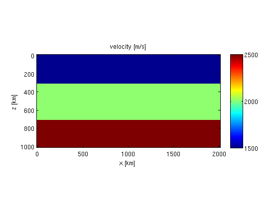
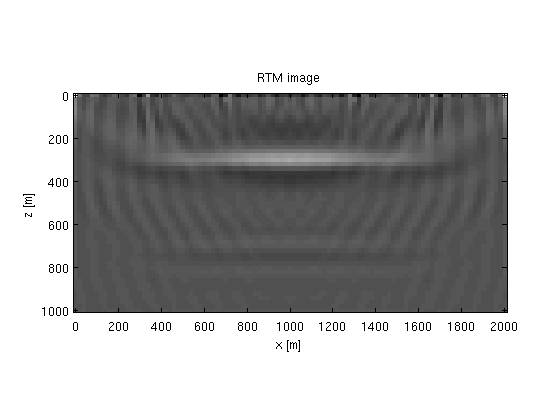

2D constant-density acoustic frequency-domain modeling, linearized modeling and imaging: Imaging
We illustrate some basic imaging capabilities on a simple layered model.
Contents
Model
We define a simple layered model:
% grid z = 0:20:1000; x = 0:20:2000; [o,d,n] = grid2odn(z,x); % velocity v = 1500*ones(n); v(z>300,:) = 2000; v(z>700,:) = 2500; % plot figure; imagesc(x,z,v);axis equal tight;colorbar; xlabel('x [km]');ylabel('z [km]');title('velocity [m/s]');
Parameters for data
% gridded slowness-squared values [km^2/s^2] m = 1e6./v(:).^2; % model grid model.o = o; model.d = d; model.n = n; % absorbing boundary model.nb = [20 20]; % source/receiver grid model.zsrc = 15; model.xsrc = 500:100:1500; model.zrec = 5; model.xrec = 0:15:2000; % frequencies model.freq = [4:2:15]; % wavelet model.f0 = 10; model.t0 = 0.01; % source matrix Q = speye(length(model.xsrc)); % make data D = F(m,Q,model);
Reverse-time-migration
We can perform RTM by applying the adjoint of the Jacobian to the data. We model data for a smooth background model:
% smoothing operator S = opKron(opSmooth(n(2),50),opSmooth(n(1),50)); % smooth model m0 = S*m; % data and Jacobian for smooth model [D0,J0] = F(m0,Q,model);
Remember, J0 is not an explicit matrix. It is simply an object that looks like a matrix to matlab. Constructing it does not require any computation. All the computations are done when multiplying it with a vector.
Now, the RTM image is given by
dm = J0'*(D-D0); % plot figure; imagesc(x,z,reshape(dm,n));axis equal tight;colormap(gray); xlabel('x [m]');ylabel('z [m]');title('RTM image');
Least-squares migration
Using the Jacobian, we can perform least-squares migration with lsqr as follows
dm = lsqr(J0,D-D0,1e-6,2); figure; imagesc(x,z,reshape(dm,n));axis equal tight;colormap(gray); xlabel('x [m]');ylabel('z [m]');title('least-squares migration image');
lsqr stopped at iteration 2 without converging to the desired tolerance 1e-06 because the maximum number of iterations was reached. The iterate returned (number 2) has relative residual 0.73.